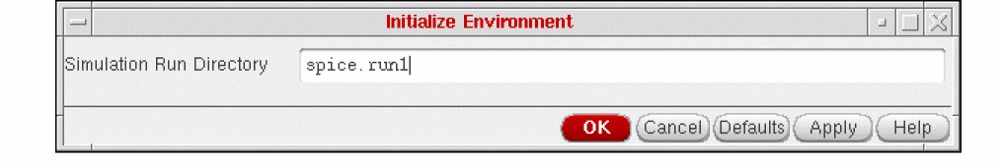
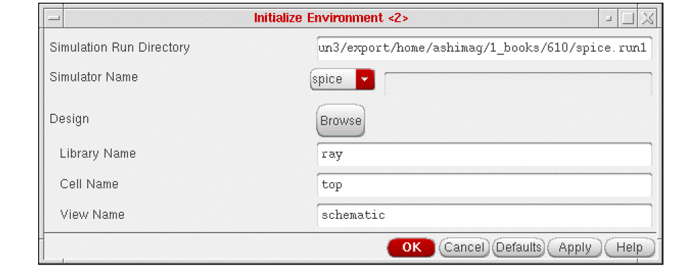

1
Setting Up SE Help
In this chapter, you can find information about
- About SE Help
- Finding the Information You Want
- Before You Can Run a Simulation
- Displaying the Simulation Menu
- Initializing a New Run Directory in the Graphical Environment
- Setting Up Simulation in the UNIX Environment
- Setting Up Remote Simulation
- Customizing Simulation
- Customizing Scale Factors
- Customizing Netlisting
For information on SE SKILL APIs, see the Digital Design Netlisting and Simulation SKILL Reference.
About SE Help
SE allows you to run simulations from the graphical interface or from a command line. In the graphical environment, you use SE menus and forms. In the nongraphical environment, you use SE commands in a UNIX® xterm window running si or you use SKILL commands in the
SE supports user-defined simulators and the following standard simulators:
Finding the Information You Want
If you have used Simulation Environment before, but need detailed information about a specific Simulation Environment feature, click any menu choice in the following diagram to go to reference information about that choice.
Application Options
This menu choice lets you view forms that are specific to your simulator. You must write the necessary SKILL code to activate this menu choice.
Show Foreground Run Log
This command lets you view the run log of the currently running foreground job.
Show Background Run Log
This command lets you view the run log of the currently running background job.
Before You Can Run a Simulation
After you complete your design, you extract it, correct errors, and save the design for simulation input. You must correct all errors you find during extraction before you simulate your design. For information on extraction, refer to Virtuoso Schematic Editor L User Guide.
Displaying the Simulation Menu
To bring up the Simulation menu when you are displaying a schematic
The system changes the menu banner to include the Simulation menu. This menu has the commands you need to simulate your design.
Initializing a New Run Directory in the Graphical Environment
The first step in simulation is setting up the simulation environment. When you initialize the environment, you specify the following:
Initially, the system turns off all commands on the
To initialize a new simulation run directory
-
In the Schematic window, select Simulation – Initialize.
The following form appears:
 -
Type the name of the simulation run directory.
You can type either a full or a relative path. If you type a relative path, the system puts the run directory under the directory in which you started the software. The default run directory is spice.run1.
The system stores all simulation input and output files in the simulation run directory.
As the system initializes the environment, it lists the files it has loaded and any overridden variables in the si.foregnd.log file -
Click OK.
The following form replaces the firstInitialize form :
The values on this form are the current window and default SE values. You can edit these fields by typing in the form or by using the Browser. -
From the Simulator Name cyclic field, select the simulator.
If you use a simulator that is not listed, select other and type the name of the simulator in the adjoining text entry field. You must select other before you can type in the text entry field. - Enter the name of the library containing the top level of your design.
- Enter the cell name of the top level of your design.
- Enter the view name of your design (for example, schematic).
- Click OK.
Setting Up Simulation in the UNIX Environment
Cadence recommends that you run simulation using the menus and forms in the graphical environment. However, you can also run a simulation using SE commands in the
Before you start a simulation in the UNIX environment, you must create the following files in your
If you run simulation in UNIX, you must create the si.env file. (This file is created automatically when you use the graphical environment.) The si.env file tells SE which design to simulate and what simulator to use. The following table lists the variables you must define in the si.env file. Each interface might store additional specific variables in the si.env file
Required Properties in si.env.
| Variable | Description |
|---|---|
Optional Property in si.env
| Variable | Description |
|---|---|
The following is a sample si.env file:
simLibName = "testLib"
simCellName = "74169"
simViewName = "schematic"
simSimulator = "silos"
simHost = "cds642"
To set up SE to run simulations in the UNIX environment, follow the steps below:
- Change to the directory that will contain the simulation run directory.
-
Create the run directory using the UNIX command mkdir
directoryname, wheredirectorynameis the name of the simulation run directory. For example, if your simulation run directory isspice.run1, type the following:mkdir spice.run1 -
Change to the newly created directory.
cd spice.run1 - Create the simulation environment file si.env.
Running si in Replay Mode
The simIlSleep() function allows you to specify time for which you need to suspend the running process. It is recommended to use the simIlSleep() function, instead of the ipcSleep() and sleep() functions, while running si in the replay mode.
For details on the simIlSleep() function, see simIlSleep in the Digital Design Netlisting and Simulation SKILL Reference.
Setting Up Remote Simulation
You can set up the system to run remote simulation using the Verilog-XL and HSPICE simulators. The local machine and the remote host must both run the X Window SystemTM.
To set up remote simulation, perform the following steps to define the necessary variables (you can set these variables using the
-
Set the SE variable simHost to the name of the remote workstation.
For example:simHost = "cds17" -
Set the SE variable simHostDiffers to true (t) if the host computer has a different binary storage format than the local computer.
For example:simHostDiffers = t
After you set these variables, you can run a remote simulation and view the results as if you were running the simulation locally.
Customizing Simulation
Using the Simulation Run Control File To Customize SE
When you initialize SE, it first loads the
SE then loads the simulation run control file .simrc if it exists. The .simrc file lets you override any netlisting or simulation environment variables. SE searches the following directories and loads the first .simrc file it finds:
$SIMRC/.simrc
$ossSimUserSiDir/.simrc
install_dir/tools/dfII/local/.simrc
./.simrc
~/.simrc
If you set a variable in .simrc that also sets options in the graphical environment (with the .simrc file settings and ignores the Options settings.
The .simrc file must be in SKILL syntax. The following is a sample .simrc file. The first line overrides the default view list used for view switching with SILOS. The second line overrides the default stopping list that stops hierarchy expansion for SILOS.
hspiceSimViewList = ("hspice" "cmos_sch" "schematic")
hspiceSimStopList = ("hspice" "cmos_sch")
The following table shows you some SE variables you can set in your .simrc
| Variable | Description |
|---|---|
|
Scaling factor for delay times. This value should match the first argument of the deftiming command. |
|
|
Name of library containing global formatting instructions for flat netlister |
|
|
Name of cell containing global formatting instructions for flat netlister |
|
|
Name of view of the cell containing global formatting instructions for flat netlister |
|
|
Specifies |
|
For a description of SKILL syntax and further information about SKILL functions, see the Cadence SKILL Language User Guide and the Cadence SKILL Language Reference Manual.
Customizing Netlisting
The way the design hierarchy is traversed to produce the netlist and the syntax of the netlist depends on your simulator. For example, you might want the netlist for a Verilog simulation to be at the logic gate level because Verilog can simulate primitives such as AND gates and AOIs. You might want the netlist for a SPICE simulation of the same design to be at the transistor level because SPICE cannot simulate logic gates.
Click the topics below to go to information about
- SE Netlisting
- Specifying a Hierarchy of Netlisting Views
- Selecting a Netlisting View from a Hierarchy
- Overriding Default View and Stop Lists
- Controlling Renetlisting
Customizing Scale Factors
The netlister can scale time and capacitance values. The scale factors for time and capacitance are defined by two SE variables: simTimeUnit and simCapUnit. With both variables, the value to be scaled is divided by the scale factor. The default value of variable simTimeUnit is 1e-9 (nanoseconds), and the default value of variable simCapUnit is 1e-15 (femtofarads). You can customize the scale factors by typing new simTimeUnit and simCapUnit values in your .simrc file.
Return to top